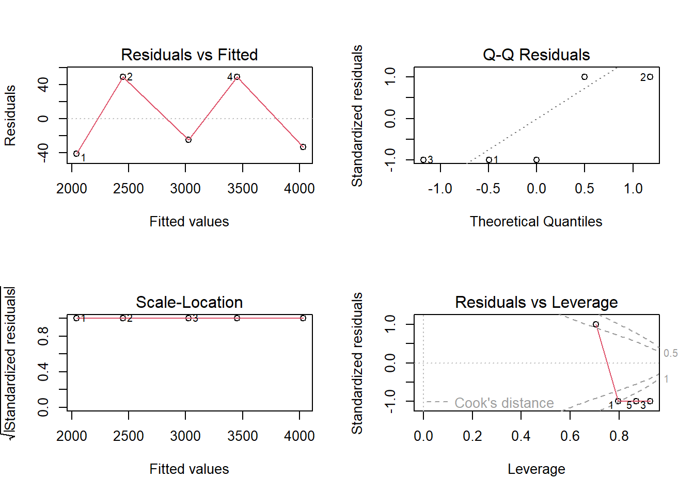

data <- data.frame(
Salary = c(2000, 2500, 3000, 3500, 4000),
Age = c(22, 25, 30, 35, 40),
Education = c(12, 14, 16, 16, 18),
Experience = c(1, 3, 5, 7, 10)
)Conducting Multiple Linear Regression in R
Hochschule Fresenius
Course: Data Analysis for Decision-Making
Professor: Prof. Dr. Stephan Huber
Date: May 26, 2026
1 Scope of Presentation
This presentation covers:
- How to load and inspect data in R
- How to specify and run a multiple linear regression model using
lm() - How to extract and interpret results from
summary() - How to run basic model diagnostics
Note
Theory of regression is assumed as background knowledge.
2 Workflow Overview
1. Data Input
Load & inspect
2. Model Specification
Define formula
3. Model Estimation
Fit with lm()
4. Output Extraction
summary() & plots
Each step builds on the previous one — a clear, repeatable workflow.
3 Data Input in R
Create a data frame directly in R:
Tip
In practice, import data from CSV with read.csv("file.csv") or from Excel with readxl::read_excel("file.xlsx").
4 Data Inspection
Use these built-in functions before modeling:
head(data) # shows the first 6 rows; confirms data loaded correctly Salary Age Education Experience
1 2000 22 12 1
2 2500 25 14 3
3 3000 30 16 5
4 3500 35 16 7
5 4000 40 18 10summary(data) # gives min, max, mean, and quartiles for each variable Salary Age Education Experience
Min. :2000 Min. :22.0 Min. :12.0 Min. : 1.0
1st Qu.:2500 1st Qu.:25.0 1st Qu.:14.0 1st Qu.: 3.0
Median :3000 Median :30.0 Median :16.0 Median : 5.0
Mean :3000 Mean :30.4 Mean :15.2 Mean : 5.2
3rd Qu.:3500 3rd Qu.:35.0 3rd Qu.:16.0 3rd Qu.: 7.0
Max. :4000 Max. :40.0 Max. :18.0 Max. :10.0 str(data) # checks variable types (numeric, factor, etc.)'data.frame': 5 obs. of 4 variables:
$ Salary : num 2000 2500 3000 3500 4000
$ Age : num 22 25 30 35 40
$ Education : num 12 14 16 16 18
$ Experience: num 1 3 5 7 10is.na(data) # check for missing values Salary Age Education Experience
[1,] FALSE FALSE FALSE FALSE
[2,] FALSE FALSE FALSE FALSE
[3,] FALSE FALSE FALSE FALSE
[4,] FALSE FALSE FALSE FALSE
[5,] FALSE FALSE FALSE FALSEExample: summary(data) reveals average salary is 3000, education ranges 12–18 years, experience 1–10 years — useful context before modeling.
5 Model Specification
Formula: Salary ~ Age + Education + Experience
| Symbol | Meaning |
|---|---|
~ |
Separates outcome from predictors |
| Left side | Dependent variable (y): Salary |
| Right side | Independent variables (x): Age, Education, Experience |
# The formula interface in R
Salary ~ Age + Education + ExperienceSalary ~ Age + Education + Experience6 Model Estimation
Fit the model using Ordinary Least Squares (OLS):
model <- lm(Salary ~ Age + Education + Experience, data = data)The lm() call returns a model object containing:
- Estimated coefficients
- Residuals and fitted values
- Diagnostic information
fitted(model) # predicted values 1 2 3 4 5
2040.984 2450.820 3024.590 3450.820 4032.787 residuals(model) # observed minus predicted 1 2 3 4 5
-40.98361 49.18033 -24.59016 49.18033 -32.78689 summary(model) # full results table
Call:
lm(formula = Salary ~ Age + Education + Experience, data = data)
Residuals:
1 2 3 4 5
-40.98 49.18 -24.59 49.18 -32.79
Coefficients:
Estimate Std. Error t value Pr(>|t|)
(Intercept) -655.738 2029.578 -0.323 0.801
Age 81.967 74.676 1.098 0.470
Education 73.770 82.783 0.891 0.537
Experience 8.197 180.886 0.045 0.971
Residual standard error: 90.54 on 1 degrees of freedom
Multiple R-squared: 0.9967, Adjusted R-squared: 0.9869
F-statistic: 101.3 on 3 and 1 DF, p-value: 0.072877 Extracting Results
summary(model)
Call:
lm(formula = Salary ~ Age + Education + Experience, data = data)
Residuals:
1 2 3 4 5
-40.98 49.18 -24.59 49.18 -32.79
Coefficients:
Estimate Std. Error t value Pr(>|t|)
(Intercept) -655.738 2029.578 -0.323 0.801
Age 81.967 74.676 1.098 0.470
Education 73.770 82.783 0.891 0.537
Experience 8.197 180.886 0.045 0.971
Residual standard error: 90.54 on 1 degrees of freedom
Multiple R-squared: 0.9967, Adjusted R-squared: 0.9869
F-statistic: 101.3 on 3 and 1 DF, p-value: 0.07287| Component | Interpretation |
|---|---|
| Estimate | Expected change in Y per one-unit increase in X, holding others constant |
| Std. Error | Precision of the coefficient estimate |
| t value | Estimate ÷ Std. Error; larger = stronger evidence |
| Pr(>|t|) | p-value; p < 0.05 → statistically significant |
| R-squared | Proportion of variance in Y explained by the model |
| Adjusted R² | R² penalized for number of predictors |
| F-statistic | Tests if at least one predictor has a non-zero coefficient |
8 Basic Diagnostics
par(mfrow = c(2, 2)) # display 4 plots in a 2x2 grid
plot(model)
What plot(model) shows:
- Residuals vs Fitted — checks linearity
- Normal Q-Q — checks if residuals are normally distributed
- Scale-Location — checks constant variance (homoscedasticity)
- Cook’s Distance — detects influential outliers
9 Implementation Example
Predict salary for a new employee:
new_employee <- data.frame(
Age = 33,
Education = 16,
Experience = 6
)
# Point estimate
predict(model, newdata = new_employee) 1
3278.689 # With 95% prediction interval
predict(model, newdata = new_employee,
interval = "prediction", level = 0.95) fit lwr upr
1 3278.689 1641.855 4915.522
Note
The prediction interval gives both a point estimate and a plausible range — useful for decision-making.
10 Class Exercise
Run a regression model in R using lm() and interpret the output.
Use your own variables and the following structure:
# 1. Create your dataset (at least 8 observations, 2+ predictors)
my_data <- data.frame(
y = c(...), # your outcome variable
x1 = c(...), # first predictor
x2 = c(...) # second predictor
)
# 2. Fit the model
my_model <- lm(y ~ x1 + x2, data = my_data)
# 3. Inspect results
summary(my_model)
# 4. Diagnostics
par(mfrow = c(2, 2)); plot(my_model)
# 5. Predict a new observation
predict(my_model, newdata = data.frame(x1 = ..., x2 = ...))Questions to answer: Which predictors are significant? What does adjusted R² tell you? Interpret one coefficient in plain language.
11 Key Takeaway
Multiple linear regression in R follows a clear, repeatable workflow:
Load data → Inspect → Specify model with lm()
→ Extract results with summary() → Check diagnostics with plot()
Mastering this sequence allows you to efficiently analyze relationships between variables and interpret coefficients, p-values, and R-squared in your own research.
12 References
R Core Team. (2024). R: A language and environment for statistical computing. R Foundation for Statistical Computing. https://www.R-project.org/
James, G., Witten, D., Hastie, T., & Tibshirani, R. (2021). An introduction to statistical learning (2nd ed.). Springer. https://doi.org/10.1007/978-1-0716-1418-1
Wooldridge, J. M. (2019). Introductory econometrics: A modern approach (7th ed.). Cengage Learning.
13 Thank You
Adineh Yazdani
yazdani_khomeirani.adineh@stud.hs-fresenius.de
Matriculation No.: 401121836
Questions welcome!